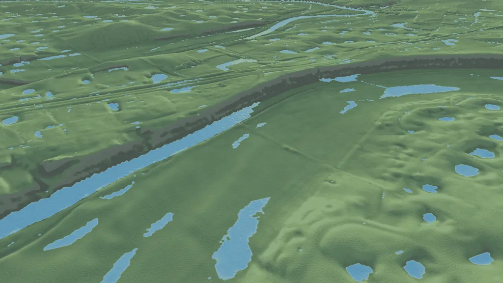

Software & dashboards
MetDash & MeteoLab
An NWS commute-forecast dashboard and the BASO radar and mesoscale tools portal, built before and alongside my WKU research.
built
Meteorology · Numerical modeling · Hazard science
Meteorology undergraduate at Western Kentucky University. I run severe-storm simulations in CM1, train neural emulators on the output, and build GPU flood models for Warren County, Kentucky, with every limit labeled.
name: Robert G. Lesoski school: Western Kentucky University program: Meteorology · EEAS labs: - DSOC # Disaster Science Operations Center - AIR # AI Research Lab models: - CM1 r21.1 # Bryan's cloud model - cm1lab U-Net # neural emulator of CM1 - local-inertial # 2-D GPU flood solver compute: TACC Vista (H100) crs: UTM 16N · EPSG:26916 goal: Ph.D., mesoscale dynamics + AI-constrained NWP status: research prototype, not validated
In motion
The first three clips are real; the last two are small illustrations, and each caption says so.
Screens
Rendered this week from my own tools. Click to enlarge.
About
I'm a meteorology undergraduate in Bowling Green, Kentucky, in WKU's Department of Earth, Environmental, and Atmospheric Sciences, working in the Disaster Science Operations Center (DSOC) and AI Research Lab (AIR). The through-line is hazard physics you can compute, with the uncertainty labels as prominent as the model.
Before WKU I founded and led the Blazer Atmospheric Sciences Organization (BASO) in Ashland, Kentucky. The long-term goal is a Ph.D. in Atmospheric Sciences on mesoscale dynamics and AI-constrained numerical weather prediction.
Projects
Each card says whether it is built, active, or a plan.

A GPU shallow-water solver on TACC Vista: 125 M cells at 5 m for the whole county, 12 storms, two 3-D viewers.

A real CM1 supercell run and a toolkit that trains 3-D U-Nets on it. 22 % better than "nothing changes" at +100 s, on one storm.
An NWS commute-forecast dashboard and the BASO radar and mesoscale tools portal, built before and alongside my WKU research.
A Python desktop monitor: Kentucky Mesonet conditions and every active NWS alert for Warren and neighboring counties.

Plan to merge LiDAR, 68,389 building footprints, 106 NBI bridges and KGS karst layers into one pipeline.

An eight-rung readiness ladder from "numerically sound" to "co-designed with a county EM office."
NWS SKYWARN spotter work, Weather-Ready Nation Ambassador outreach, NASAR SARTECH-track and FEMA ICS training.
The manuscript The Pencil in the Case, and a co-authored paper on coherent vortices in the mantle.
Photography on a Canon EOS R7 and a student-radio show on WKU Revolution 91.7.
Partners
Organizations I work with, learn from, compute on or draw data from. Naming them does not imply that they endorse this site or any model output on it.
Rainfall statistics (Atlas 14), forecasts, river gauges and storm reports
The intended end user: co-design of flood products is planned, not yet done
Off the grid
A short, separate corner. The three photos are credited open-license stand-ins until my own are added.
Landscape, sunset, severe-sky and infrastructure photography, including the Simeon Willis Memorial Bridge and WKU campus scenes.
Student radio host: music, live weather updates and sports.
Author of the manuscript, and an active American Red Cross blood donor.
Links
Based in Bowling Green, Kentucky. Open to research collaboration and to talking with emergency managers about what flood products would actually help.
Credits
Every image here that is not mine, with author, license and a link to the original. Resized and re-encoded to WebP, no other changes.
| Where | Author | License | Original |
|---|---|---|---|
| Home · Off the grid · bridge (placeholder) | Antony-22 | CC BY-SA 4.0 | Wikimedia Commons |
| Home · Off the grid · storm (placeholder) | Ken Lund | CC BY-SA 2.0 | Wikimedia Commons |
| Home · Off the grid · campus (placeholder) | Bbadgett | CC BY-SA 3.0 | Wikimedia Commons |
| Flood · Barren River bridges | Nyttend | Public domain | Wikimedia Commons |
| Flood · College Street Bridge | Nyttend | Public domain | Wikimedia Commons |
| Flood · Barren River hydrograph, April 2025 | NWS / NOAA | US government work | NWS Louisville · live gauge |
| Flood · observed rainfall, April 2025 | NWS / NOAA | US government work | NWS Louisville |
| Flood · two-day rainfall, May 2010 | NWS Louisville | US government work | NWS event summary |
Everything else is my own work or output of my own models. Flood renders contain data © OpenStreetMap contributors (ODbL); terrain is USGS 3DEP and KyFromAbove.

.jpg){kind=link}